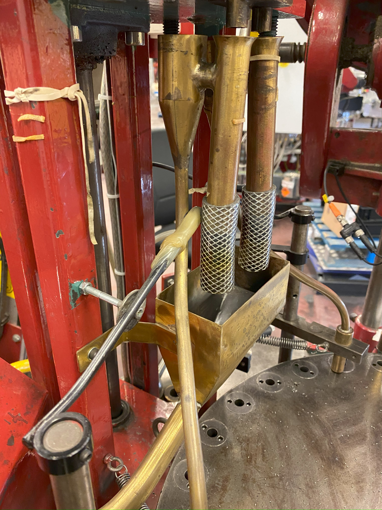

Blog


From Rubber Bands to Robust Engineering
Some machines were originally held together with rubber bands, which seemed like a quick fix. However, rubber bands vary in strength and dry out over time, leading to inconsistent performance, increased downtime, and material waste. We replaced this with a proper engineered solution, resulting in significantly higher production, reduced material waste, and fewer stoppages. By replacing the rubber band solution with a robust mechanical construction, we solved the issues of variable strength and aging. This upgrade led to a substantial increase in production efficiency and reliability.


Rapid Prototyping with 3D Scanning
We introduced 3D scanning and printing for worn machine parts, enabling us to quickly replace and adapt components for new products. What used to take weeks can now be accomplished in minutes, dramatically improving flexibility and reducing downtime. With the ability to sketch and 3D print new parts on demand, our team can now iterate and implement solutions rapidly, supporting continuous improvement and innovation on the production floor.

Welcome to My New Blog!
I'm excited to launch my new blog where I'll share insights, tips, and inspiration about technology, leadership, and innovation. Stay tuned for regular updates and feel free to suggest topics you'd like to read about!

How to Lead Technical Teams Effectively
Leading technical teams requires a mix of clear communication, trust, and a passion for innovation. In this post, I share my best practices for building high-performing teams in engineering and automation.

The Power of Innovation in Industry
Innovation is the driving force behind progress in any industry. Here, I discuss how embracing new technologies and creative thinking can transform business outcomes and create lasting value.